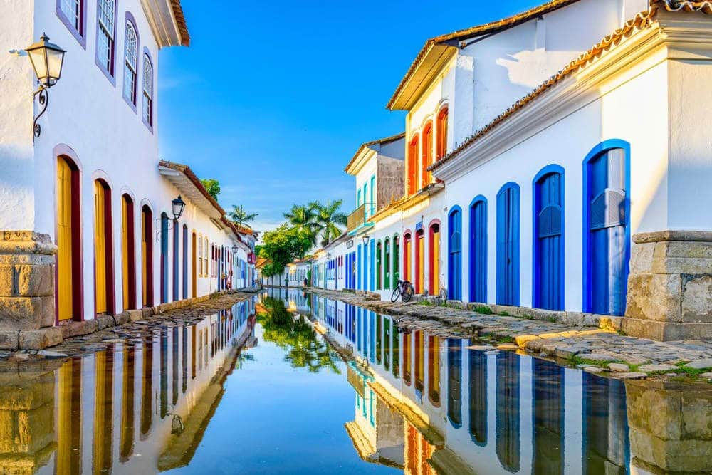

Descubre la maravilla de viajar por el mundo. ¡Haz clic para obtener más información!
Brasil

¡Bem-vindo! ¡Bienvenido a Brasil! el 5º país más grande del mundo.
¡Todo para unas vacaciones de diez lo puedes encontrar aquí!
Atractivos Turísticos


-
Cristo Redentor
-
Pueblos Coloniales
-
Cataratas de Iguazú
-
Carnaval de Rio
Itinerario
Día 1: Río de Janeiro
Río de Janeiro, Empieza con buen pie visitando la ciudad más espectacular del país: Río de Janeiro. Leer más
Día 2: Cataratas de Iguazú
Cataratas de Iguazú, visitar una de las 20 maravillas del mundo.
Día 3: Lençóis Maranhenses
Lençóis Maranhenses Una de las maravillas naturales de Brasil es este parque nacional de 1.550 kilómetros cuadrados. Leer más
Día 4: Ilha Grande
Ilha Grande de sus playas vírgenes, paseos en barco o incluso trilhas, senderos en los que disfrutarás de su vegetación y fauna de Ilha Grande.
Día 5: Paraty
Paratyuno de los lugares coloniales mejor conservados del país. Leer más